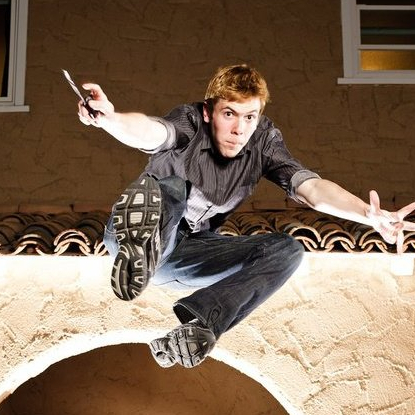
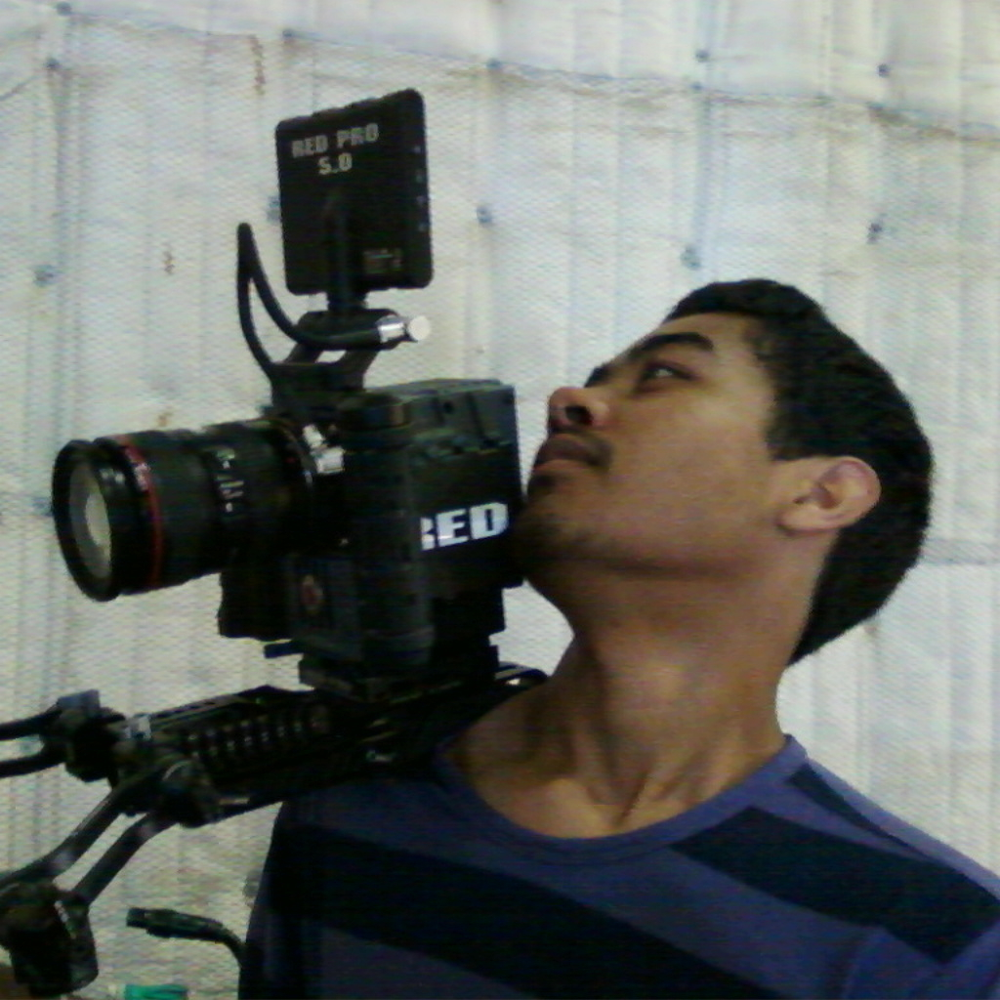

The art of film has always seemed to pursue Juan. At age 11, he viewed a documentary on how a film was made. He was greatly inspired and bought his first camera with his birthday money. He made a commercial which he showed all of his 6th grade class and impressed them with the skills he acquired. He has been working on films ever since and is always finding ways to get himself into a set. Juan is currently directing his first feature film and going to school in order to obtain a film degree.

Eric Kleifield
Executive
Eric started making movies in the 5th grade, when he found an old video camera in his brothers room. Starting with random short films made with his friends, he continued to expand his knowledge and practice of the field. He had an idea for a short film that became Dead Rush, and decided to team with some new friends and crew leading to the formation of Beyond Reel Productions. Since then Beyond Reel has expanded as a company and made 2 other short films as well as many music videos and projects. Eric is currently enrolled in UCLA as an English and Creative Writing major, looking to pursue film and production as a career.
In John Burroughs Middle School, Henry met Juan. By the 8th Grade, they were close friends. Being aware of Juan's passion for film, Henry and some of his classmates asked Juan for help with their Spanish project. The following year, Henry worked on a few improvised sketches with neighborhood kids until Juan approached him with a film project titled Escaping the Past. Eric was also invited to this shooting. There he invited Juan and I to help him film a movie he called Dead Rush. Although Escaping the Past was never finished, it set the precedent for Henry to become a member of Beyond Reel Productions. He has worked on various projects since and continues to be a proud member of BRP.

Sab Sikder
Producer
Lights, camera, action! Raised in the heart of Los Angeles, Abu Sikder has grown to love: music, choreography, and film. His initial curiosity and passion for dance catalyzed the beginning of Beyond Reel Production's music video era. Due to much love from audience and huge success, this young man has been fueled to step up into the game of acting. As a determined opportunist who has been previously published in the Cedars-Sinai Medical Center's Catalyst Magazine, he will follow his philanthropic goal in becoming a doctor. He will study at none other than the University of California Berkeley in order to reach his academic and filming potential. In his assertions of BRP he states, "Beyond Reel Productions is a highly anticipated film phenomenon, which brings a classy, modern twist to art of film. If you aren't in love, then please reconsider your definition of film."

Christian Edghill
Camera Operator
My interest in filmmaking became known to me when I was in middle school and it all began with the process of screenwriting. In 8th grade, I learned how to write a screenplay from the internet, and started writing my own 120 paged script that took 6 months. I didn't start making films until my 10th grade year, where I joined an after school filmmaking club named in-focus. Thats where I became more interested in the production stage of filmmaking. We all had three weeks to make one short film for a film festival. We all wrote the script, and assigned jobs. I was assigned as the Director of cinematography, and I worked with my first camera, the cannon XL2. We all made that deadline, and made our first 9 min length short film named Harm a throned rose. After that I did whatever I could to get on a film set and dedicated myself into becoming a director.
I still remember the first time I became genuinely interested in film. For me, movies are important because they offer me a chance to forget the world I live in and experience something truly magical. whether it is feelings of anxiety and fear when watching a horror flick or pure-innocent pleasure when watching comedies, films have the uncanny ability to induce genuine emotions while telling stories. When i realized why I love movies so much I decided to become a filmmaker. As a filmmaker, my goal is to produce movies that allow my audience to experience the same magic that I have experienced throughout the years.
I got interested in acting when I was in first grade and got a role as an ant (who manages to chase away a goat off a farm) for a play our class was doing. Since then I was interested in theatre and telling a story and entertaining people. I joined up with BeyondReel when Henry asked me if I wanted to be in a short film. I said "yes" in a heartbeat and it was set. I am currently studying at The Lee Strasberg Theatre in West Hollywood.